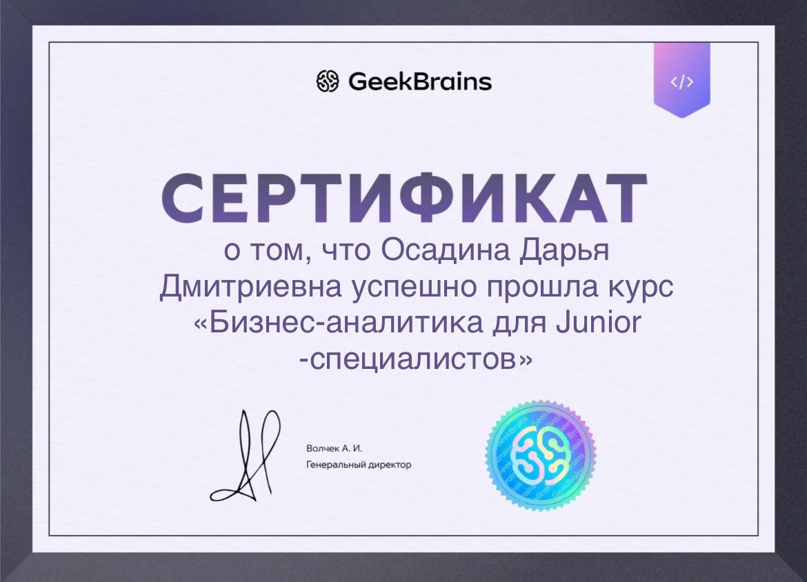

Персональные данные
Дата рождения: 05.02.2005
Номер телефона: 8 (910) 999 99 99
Email: dariaosadina@yandex.ru
Город: Москва, Россия
Ник в telegram: @dar_osa
Образование
Госудаственный Университет Управления
Бакалавриат по специальности: "Бизнес-математика и анализ данных"
Дополнительные курсы
Цель
Получение должности младшего бизнес-аналитика в перспективной компании. Жлаемый уровнь оплаты 60 000 рублей.
Опыт работы
ООО "МУТ"
Участие в течение полугода в проекте по анализу доходов организации, где мною было выдвинуто решение, которое увеличило прибыль на 15%.

Навыки
| HARD SKILLS | SOFT SKILLS |
|---|---|
| Знание SQL для работы с базами данных | Гибкость и адаптивность |
| Автоматизация сценариев с помощью Python | Критическое мышление |
| Работа с инструментами визуализации | Работа в условиях неопределенности |
| Работа с Power BI или Tableau | Коммуникативные навыки |
Интересы
Хобби: танцы(Тодес(ссылка на студию)), горнолыжный спорт, чтение
Любимая песня:
Любимое видео: